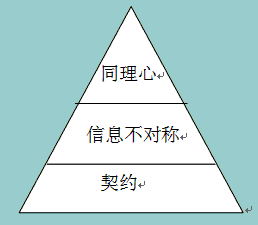

#社区运营#互联网一贯做的就是消除信息不对程。而现在如果提出加强“信息不对称“的话，那就要利用人性中的懒惰，毕竟搜集大量信息以及自己做决策，对很多人来说，并不是个愉快的事情。没有绝对的信息对程。@韩秀超云连品牌:今天看见@吴蚊米 发的电商店铺定位的帖子，我很有感受，营销的核心就是信息不对称性，完全信息公开了就不好玩了，所有的人都在瞎子摸象，没有人完全洞察到事物完全的本质，除了佛陀！传统渠道利用的是物质位置的便利，靠客情、体验、情感打动人，电商如果光靠价格，一定走不长远，制造信息不对称是方向 